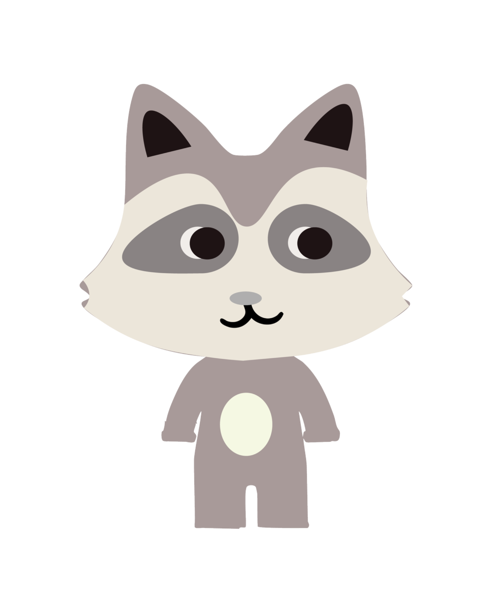
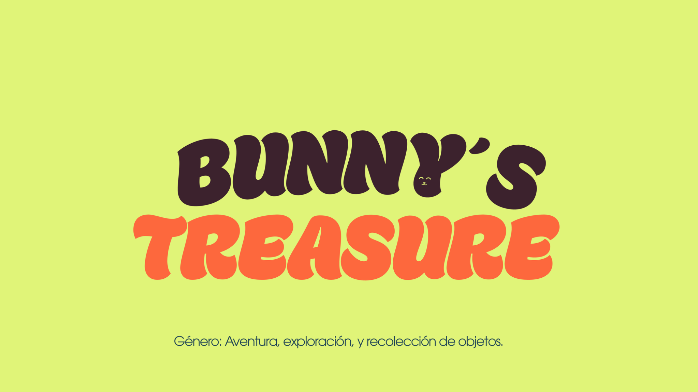

MISIÓN FINAL: CONSIGUE LA TERCERA LLAVE Y ENCUENTRA EL TESORO
Regresar al nivel 2
Después de superar el bosque misterioso, la cueva de las rocas y el templo antiguo, Bunny ha conseguido las tres llaves doradas y encontrado el tesoro escondido. 🐰🏆